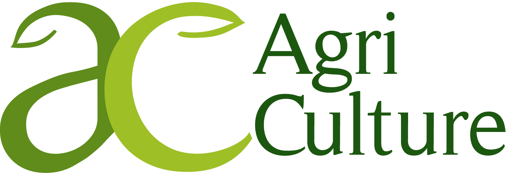

Jurgis Lillais
Technical Operations · SIA AgriCulture
DevOps and GIS tooling, agricultural meteorological station installation, greenhouse climate and irrigation system maintenance — if it's technical and it grows, I keep it running.